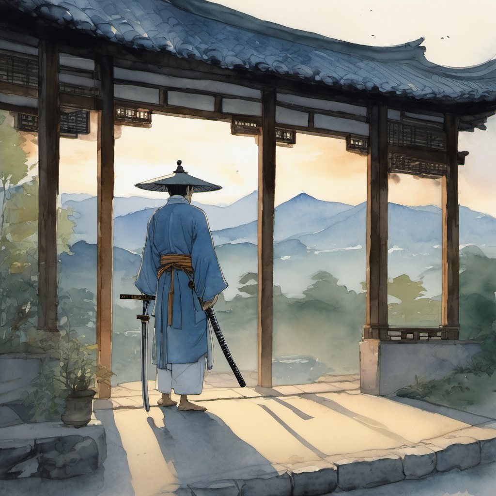
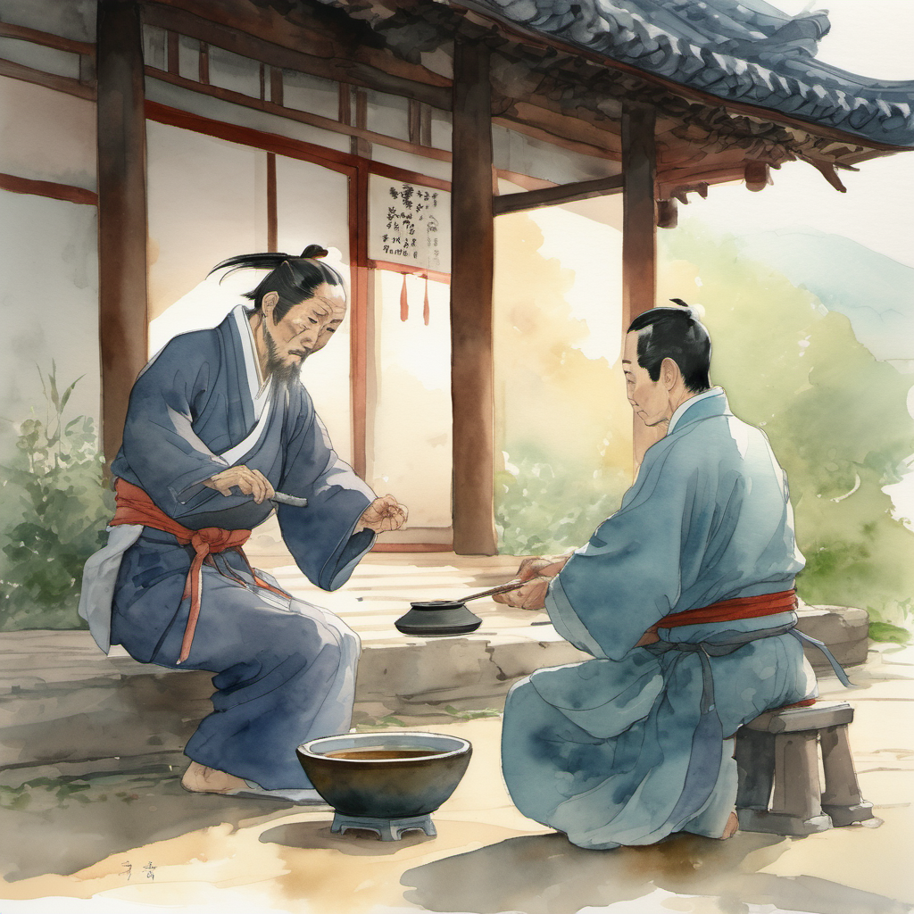
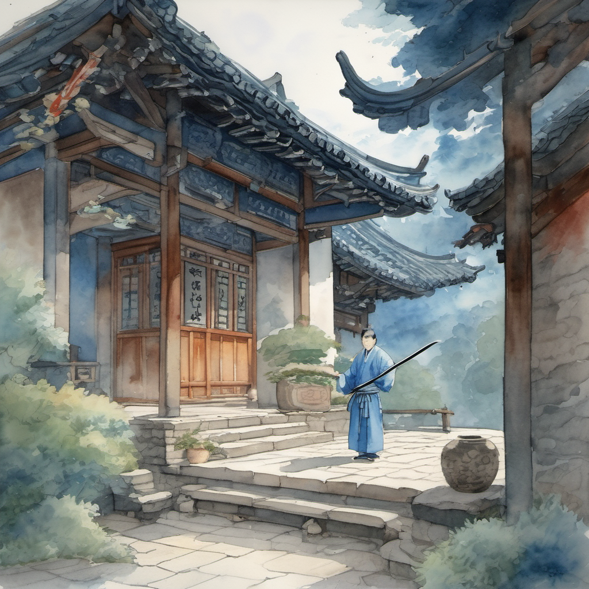
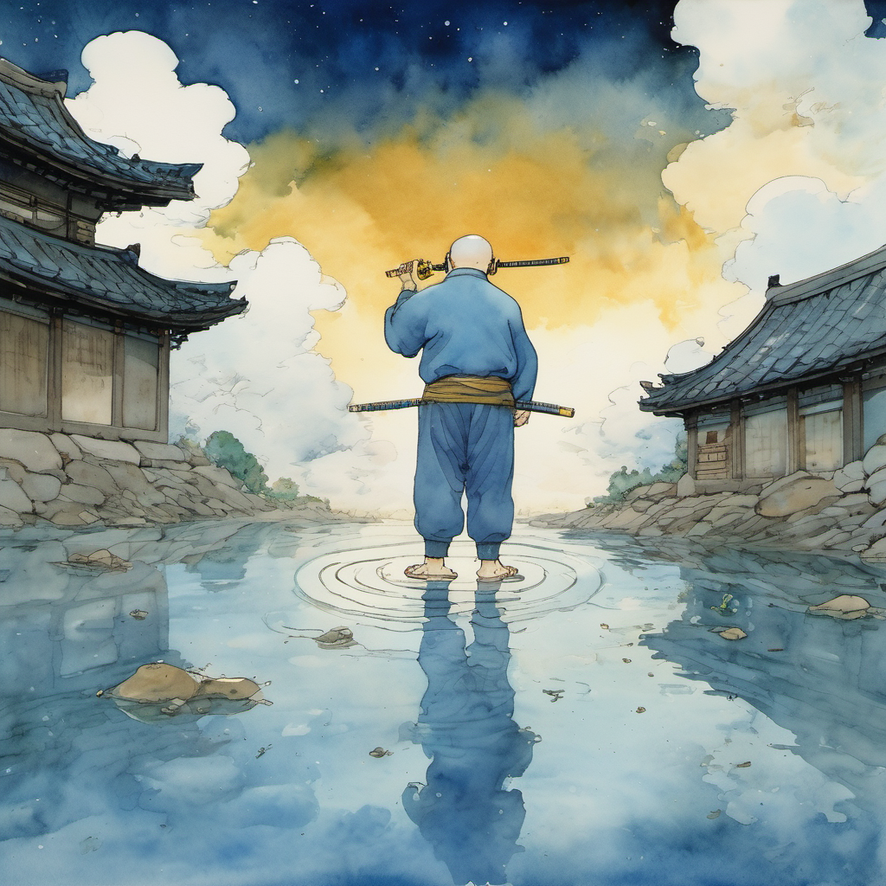
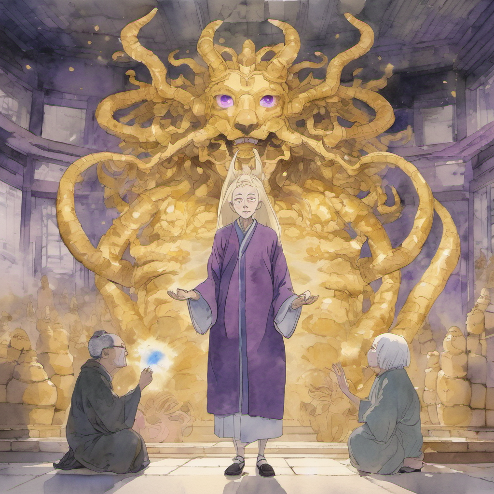
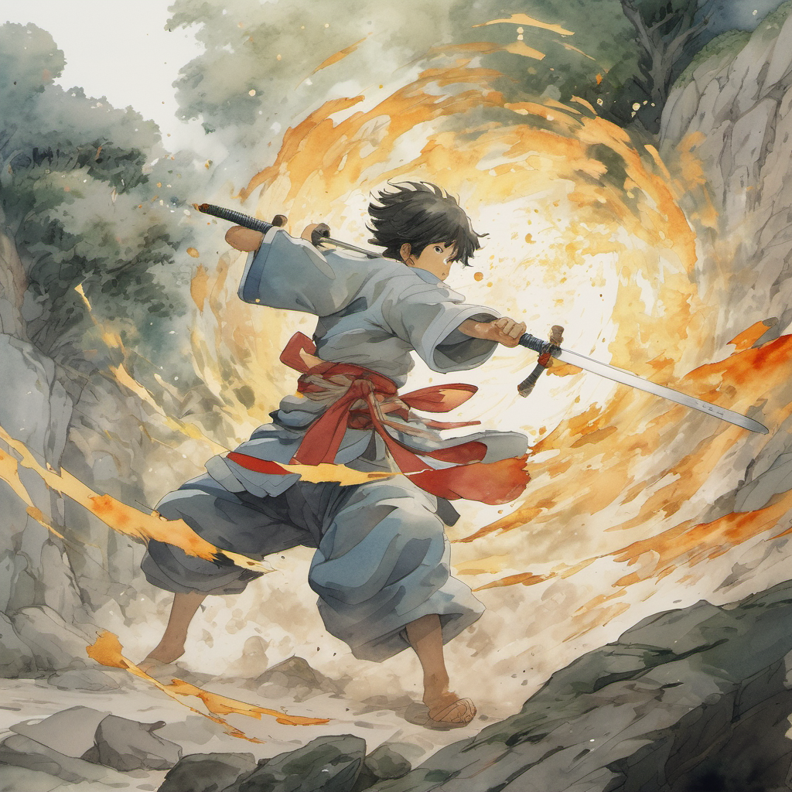
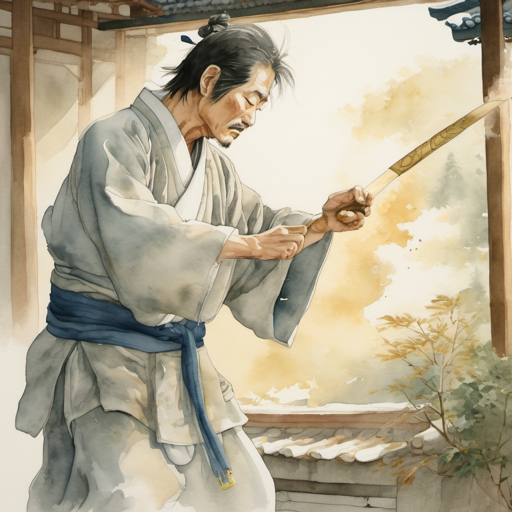
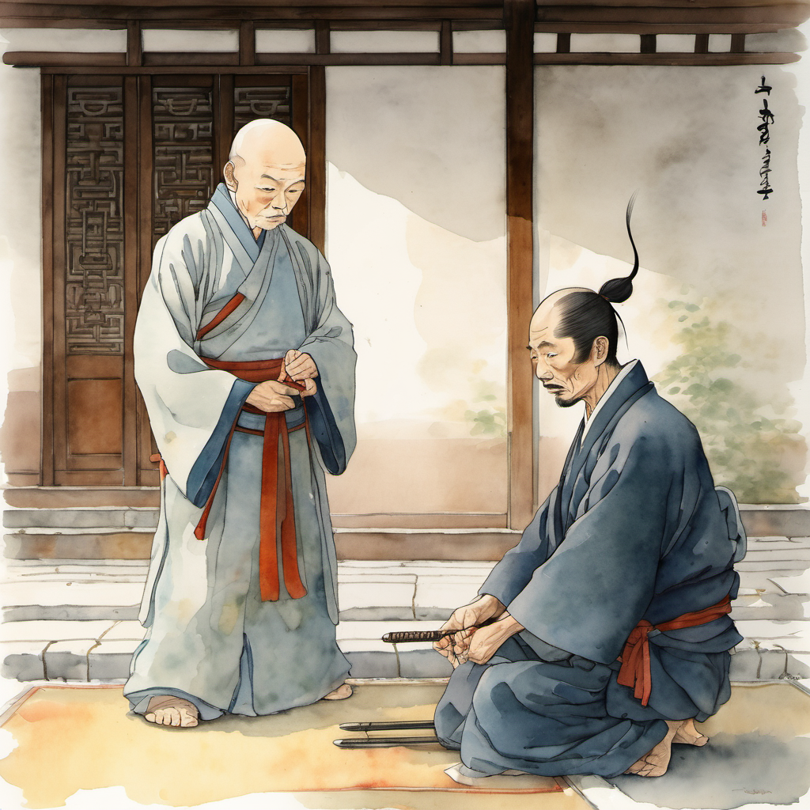

청천 단신 등장 — 황금색 실

청천 — 한 명. 등 뒤에 — 4명의 — 청년 검수도 — 무당파 본 본 사부 — 무명도 — 없었다. 단신.
검집은 — 등에 — 한 번 — 멘 — 채. 검의 — 손잡이가 — 어제와는 — 한 번 — 달랐다. 어제 11화의 — 손잡이는 — 짙은 — 흑색 — 실. 본 화의 — 손잡이는 — 어제 — 그 — 흑색 — 실의 — 위에 — 한 번 — 더 — 황금색 — 실이 — 한 줄 — 감겨 — 있었다.
마지막 청 — 검 부러짐 예고

오방위의 도(道) — 단신 발동 ⭐

청천의 — 검이 — 한 번 — 5방위로 — 한 번에 — 갈렸다. 한 자루의 검이 — 5개의 — 잔상으로 — 한 번에 — 객점 마당의 — 동서남북중앙 — 5방위에 — 한 번에 — 박혔다. 5개의 — 검 끝에서 — 5줄기의 — 푸른 — 검기가 — 한 번에 — 솟아올랐다.
11화의 — 5명 진형은 — 5개의 검 끝이 — 한 점에서 — 한 줄기의 — 검기를 — 만들었다. 본 화는 — 한 자루의 검이 — 5개의 잔상으로 — 5방위에 — 박힌 채 — 5줄기의 — 검기가 — 한 점에서 — 만났다. 한 단계 위.
어머니의 박자가 가라앉음

정주가 — 한 번 — 무릎의 시큰함을 — 한 번에 — 느꼈다. 9,860원의 박자가 — 본 화에서는 — 한 번 — 깊게 — 가라앉아 — 있었다. 작두 박자도 — 한 번 — 가라앉아 — 있었다. 어머니의 박자도 — 가라앉아 — 있었다.
슬레이어 풀빌드 — 월자 + 유교 드래곤 ⭐⭐⭐

슬레이어의 — 헐리웃 금발 위로 — 검은 그림자가 — 한 번 — 솟았다. 그 그림자에서 — 11화의 — 유교 드래곤이 — 한 번 — 다시 — 솟아올랐다 — 머리 4개. 뿔 8개. 비늘 황금. 눈 다섯. 본 화에서는 — 그 위에 — 한 번 — 더 — 한 사람의 — 그림자가 — 한 번 — 어른거렸다. 작두를 — 양손에 — 든 — 한 — 무당의 — 그림자.
월자.
유교 드래곤이 — 한 번 — 4개의 머리를 — 월자의 — 작두 옆에 — 한 번에 — 굽혔다. 8개의 뿔이 — 한 번 — 황금빛으로 — 바닥에 — 닿았다.
무휼 5cm 어긋남 — 회전 베기

작두 박자가 — 한 번 — 평원의 — 새벽 안개를 — 한 번에 — 갈랐다. 위로 — 한 박. 아래로 — 반 박. 위로 — 한 박 반. 아래로 — 반 박. 균형이 아니라 — 들쭉날쭉.
청천의 — 검 한 자루의 — 5개의 잔상이 — 한 번 — 흔들렸다. 5방위에 — 박힌 — 5개의 — 잔상의 — 본 자세가 — 한 번 — 5cm 정도 — 한꺼번에 — 어긋났다.
검 부러짐 — 무당파 본 본 결의 끝점

홍대걸이 — 박자 강타 — 한 번 — 갈겼다. 청천의 — 본 손잡이의 — 황금색 — 실 — 한 줄에 — 황금빛 — 손바닥 자국이 — 박혔다.
청천의 — 검 한 자루가 — 한 번 — 흔들렸다. 5방위의 — 5개의 잔상이 — 한 번에 — 한 점으로 — 모였다. 그 한 점이 — 청천의 — 손잡이. 황금색 — 실 — 한 줄이 — 한 번 — 끊어졌다. 그리고 — 검이 — 한 번 — 두 동강으로 — 부러졌다.
청천의 — 목소리가 — 한 번 — 흔들렸다. 그러나 — 그 흔들림은 — 한 번 — 깊은 — 안도의 — 톤 — 이었다.
정주 거절 — "우리는 4명도 많아"

청천이 — 한 번 — 안개 속으로 — 걸어 들어갔다. 등 뒤의 — 안개 너머로 — 한 — 그림자가 — 한 번 — 비쳤다 — 무명 사부의 — 그림자. 한 번도 — 비치지 — 않았던 — 그림자가 — 본 화의 — 마지막에 — 한 번 — 짧게 — 비쳤다. 그리고 — 한 번 — 사라졌다.
(2권 13화 끝)